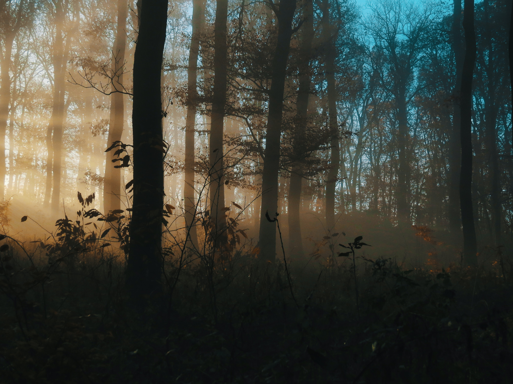

Reserva Biológica El Silencio
Municipio de El Retiro - Antioquia
La Reserva Biológica El Silencio está en la cordillera Central; en el municipio de El Retiro, oriente antioqueño, veredas Puente Peláez y La Hondita. Posee un área de conservación de 171 hectáreas y está conformada por cuatro predios denominados Las Flores, El Silencio, La Montañita y La Hondita. Por su cercanía con Medellín, el municipio de El Retiro forma parte del llamado ‘segundo piso de Medellín’ y de la tradicional ‘Vuelta a Oriente’, paseo casi obligado de fin de semana para miles de residentes de las zonas circundantes, especialmente de quienes viven en el Valle de Aburrá. Los predios de la reserva fueron donados a la Fundación Natura por Bancolombia en el año 2010.